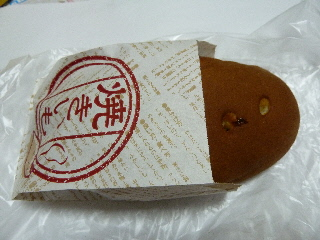
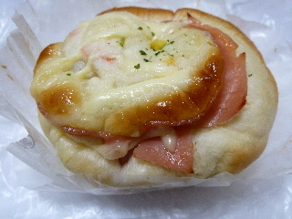

島根県松江市東朝日町151イオン内
更新日 : 2012/10/14
イオン松江店内のパン屋さんで買い物しました。

焼きいもパンです。
よく出来てますね。表面の茶色い部分はサツマイモの皮っぽい味になっていました。中には甘くしてあるサツマイモが入っていました。お菓子な感じです。

ポテトサラダのパンです。
ポテトサラダが好きなので、もっと食べたーいって思いました。
【おいしいものを食べよう。】【たくさん寝よう。】
【ソロ活をしよう!】【季節感のあることをしよう。】【動画視聴はほどほどに。】【当サイトの全てのコンテンツは無断転載禁止です。】